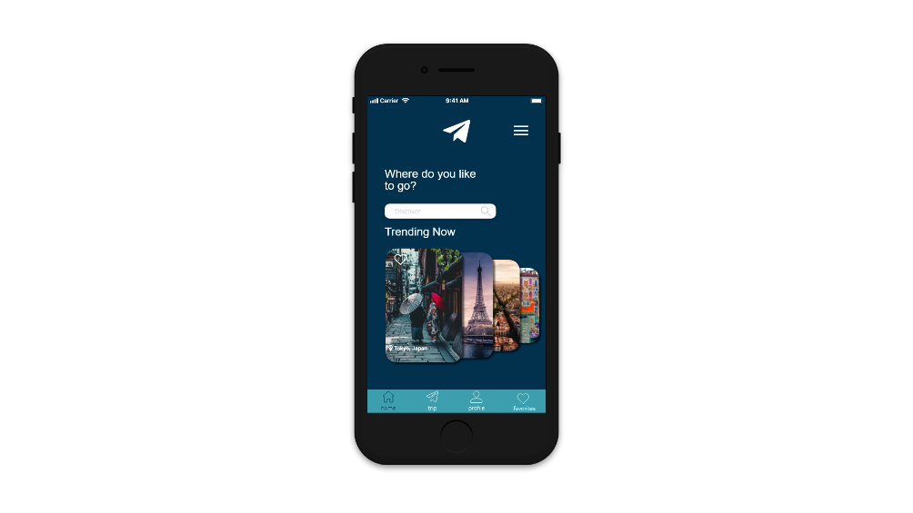

When I first started my career as a UX/UI designer, I was given a great opportunity to challenge my UX/UI skills and explore travel industry. The task was design a travel app that helps international travelers solve their inability of choosing a right packaged travel deal, managing their trips, and searching for activities of the place they visit.
For this project, I needed to target travelers who are wanting to save money and time during their booking, and also willing to discover popular activities at the destinations that they visit.
Every idea or wireframe is frequently tested by myself if I find any problem or solution I will need to bring it back to the Ideation phase to sketch out the flow and solution on a piece of paper.
Wanderer was designed to help international travelers support their wanderlust by providing individualized packaged travel deals including activities available at their fingertips.
Many travelers around the world needs a resource that provides all of the essential information about a destination and travel deals because it is time consuming to sort through multiple different sources of information.
Wanderer will focus on fully packaged travel deals and things to do when visiting a new destination but will less concerned about "must eat" places because there are already many apps that fill this need. In addition, users have the ability to share their trips and mark their favorite destinations or activities.
According to my plan I was supposed to interview 5 people, but I could only able to grab 3 at a local Starbuck shop. After gathering and analyzing their answers and information, I created a affinity diagram (below). This process allowed me to find more insights and ideas in order to design the best solution.
I created this empathy map (below) to continue to deeper empathize with my user. Doing this helped me understand thoughts and feelings of what was going on with my user. In this project I focused on Wayne, an experienced programmer.
Wayne’s goals are taking his girlfriend to vaction at least once a year and discovering the uniqueness and authenticities of every place he visits to fulfill his wanderlust characteristic.
Wayne’s persona will give me more insight on his goals, frustrations, and background to build a fitting travel application for him and many others in need of a travel plan.
This is one of the most powerful tool that I used to collect feedbacks from Wayne during my interview with him. After analyzed collected information, I started my brainstorming session to help me generate ideas for the app.
Based on my ideation map I have sorted out which is most priority for the app and which impact the most for users by using this matrix structure.
During my competitor analysis, I discovered that "Gravy Events" became a huge resource for users to find nearby events and "Tripit" did an amazing job at allowing users to manage their trips and also sharing their trips with others. Their designs are visually appealing and easy-to-use applications.
A picture is worth a thousand words. I created this storyboard (below) so that I could visually predict and explore Wayne's experience with "Wanderer". It gave me a clear sense of what's really important for him in my design.
This is the final step for ideation, user flow. This user flow was created based on a task for Wayne which is book a trip to Paris. This process allowed me to document his experience with the app and how was he made his decisions to complete his task.
This prototype link is foucs on booking process. User will create an account using Facebook, pick Paris card from homepage, and then follow the steps of booking process.
This was one of my very first projects when I started UI/UX. This challenge helped me to develop my skills in terms of running market research, collecting and analyzing data, planning the logical structure of an app, and design. In the future in my available time, I will run through the process again and again to make the app better for millions of wanderers out there.